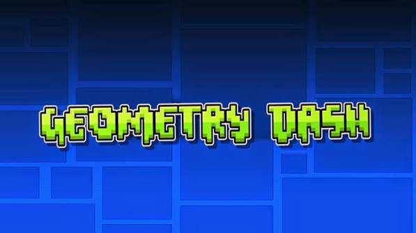

geometry dash
Світ ритму та швидкості але за цим море розбитих телефонів з комп'ютерними мишами і клавітур які поломані навпіл
Геймплей

Стрибаєш, летиш і міняєш гравітацію під музику — один промах на фініші, і починаєш спочатку.
- Управління в один клік або клавішу
- Різні режими: куб, корабель, хвиля, куля та інші
- Точний таймінг під ритм треку
Важкі рівні
На складних демонах нерви перевіряються на міцність, а мишки й клавіатури — на витривалість.
- Вузькі проходи й швидкі переходи між режимами
- Тисячі спроб заради одного проходження
- Особливий біль — злив на 98–99%
Розробник
Гру створив шведський розробник Роберт Топала (RobTop Games), а спільнота додала ще більше хардкору й творчості.
- Автор гри: Роберт Топала (RobTop)
- Власний редактор рівнів від гравців
- Постійна музика й ритм-челенджі